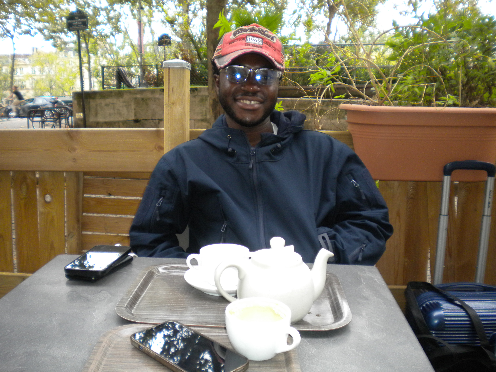

Randy Gyimah

Summary
An ambitious and driven Junior Software Engineer with a background in Clinical Neuroscience. I am eager
to leverage in-depth research, strong analytical and programming skills and data-driven approach to
problem solving and decision making across technical and scientific industries. I have a proven ability to deliver
comprehensive analysis and project outcomes under pressure and communicate complex concepts effectively, aiming to contribute,
continuously develop and thrive in dynamic settings.
Education
- MSc Clinical Neuroscience, University College London 2022-2023
Project: Development of analytical tools for correlating autonomic responses to different types of seizures
- BSc Biological Science (Neuroscience), University of Leicester 2018-2022
Project: Does heme-oxygenase have a role in the regulation of ion channels by heme?
- Uxbridge College 2016-2018
A-Level Biology, Chemistry, Physics
- Uxbridge College 2015-2016
GCSE English, Physics, Biology, Chemistry, Maths
Work Experience
- Special Education Needs Support Assistant, [Jubilee Primary School] – (October
2023 - July,2024)
- Provided 1:1 support for two children with mental health disorders,
utilising effective communication to assist with educational needs and behavioural interventions.
- Collaborated with educational staff to create tailored intervention strategies and maintain a supportive learning environment.
- Conducted regular documentation and feedback to inform individualised education plans.
- Research Assistant, [Queen Square Institute of Neurology, Clinical and Experimental Epilepsy Department] - (January 2023 - September 2023)
- Utilised Python and MATLAB for building an application to analyse the correlation between pupil dilation, seizures, and cortical spreading depolarization.
- Actively engaged in laboratory work, including the preparation and handling of equipment and materials necessary for the research.
- Participated in monthly presentations to provide updates on the research progress.
- Involved in the scientific write-up of the research findings.
- Collected and managed large datasets and applied principles of statistical
analysis to analyse the research data.
- Nightingale Hammerson - Health Care Assistant ( July 2022- October 2023)
- Delivered personal care and medication management for residents with dementia, ensuring the highest level of patient safety and comfort.
- Maintained accurate health records and communicated effectively with a multidisciplinary healthcare team.
- Enable inclusive support limited- Casual Support Worker ( December 2019- March 2022 )
- Provided comprehensive support for individuals with autism, diabetes, and learning disabilities, facilitating personal care and community engagement.
- Managed medication routines, dietary requirements, and blood glucose monitoring, demonstrating a commitment to holistic health management.
Skills
- Experienced in programming with Python, Javascript, HTML/CSS, SQL, MATLAB.
- Fundamental knowledge in cloud tools like AWS
- Proficient in the systematic review of scientific literature and scientific writing.
- Knowledge of quantitative and qualitative research methodologies
- Advanced computer skills in Microsoft Office 365, referencing databases, andstatistical software.
- Great organisational, teamworking and communication skills
Awards and Certificates
- Recognised for academic excellence with an award for being one of the top- performing students in Biological Sciences undergraduate program.
Others
Hobbies
Contact Me